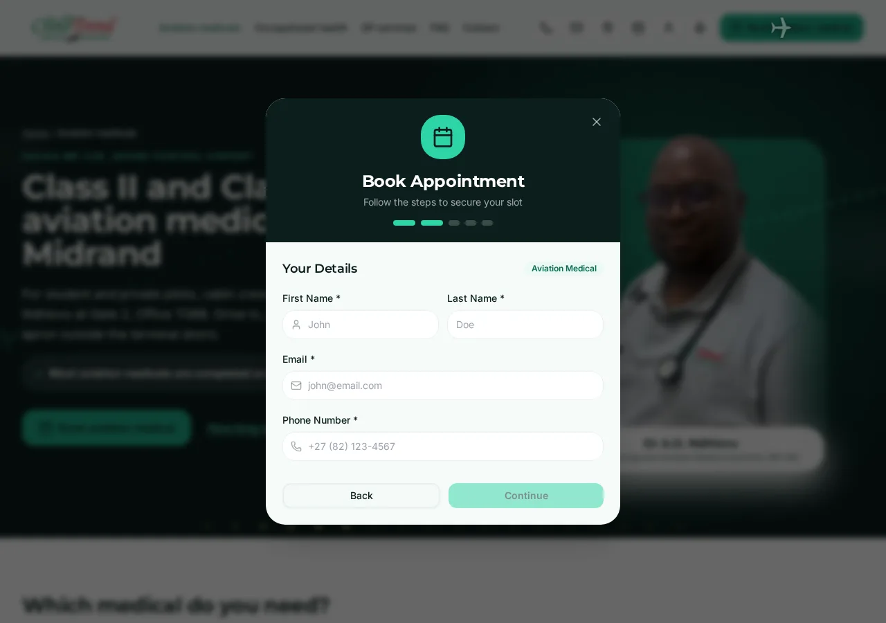
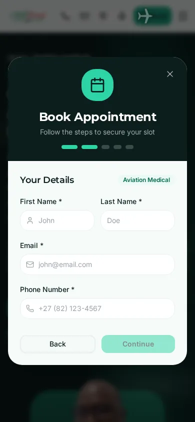
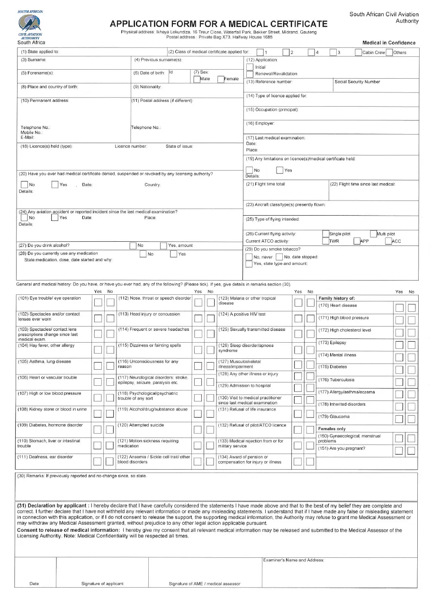

LIVE NOW: booking pop-up on the old Vercel system
Every Book button opens this pop-up. Bookings go to the old Vercel system and its database, not to GHL. Changes use "View booking".


NEW: /book/ page with the GHL calendars, SACAA form first for aviation
LIVE NOW: no online form. Paper SACAA form CA 67-08, filled in by hand
Patients fill in and sign the paper SACAA application at the practice (or print it themselves).

NEW: /sacaa-form/ online, signed with a finger or mouse, emailed as a PDF to info@ only
LIVE NOW: no travel clinic page
The live site has no travel clinic page or booking option.
NEW: /travel-clinic/ (preview only until Dr Ndhlovu confirms the details)
LIVE NOW: an inline message, the web address does not change
After a booking or a message the live site only swaps in a "thank you" text on the same page. GA4 cannot see a separate page, so conversions rely on inline events only.
NEW: each conversion has its own page (noindex)